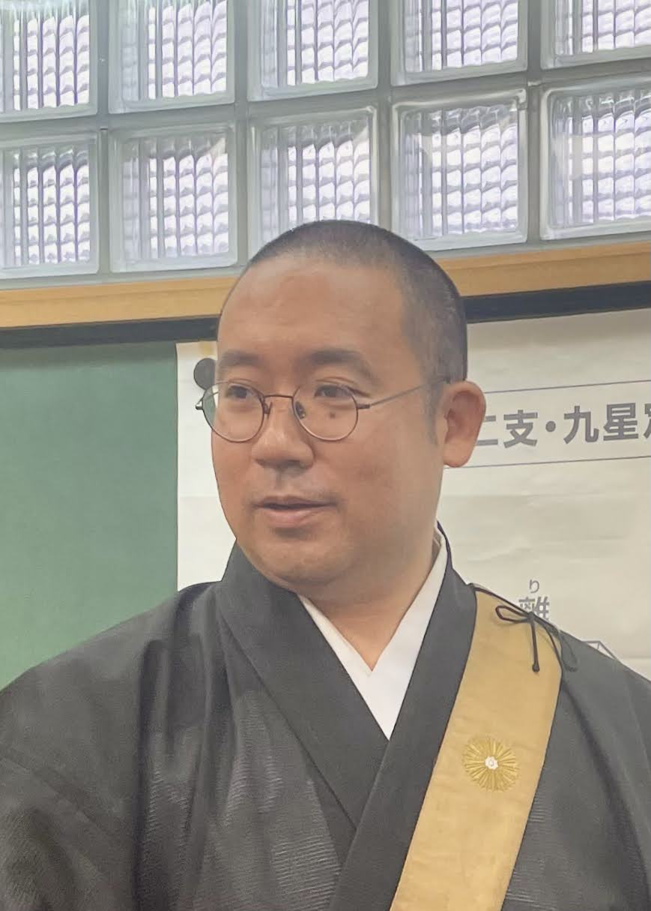
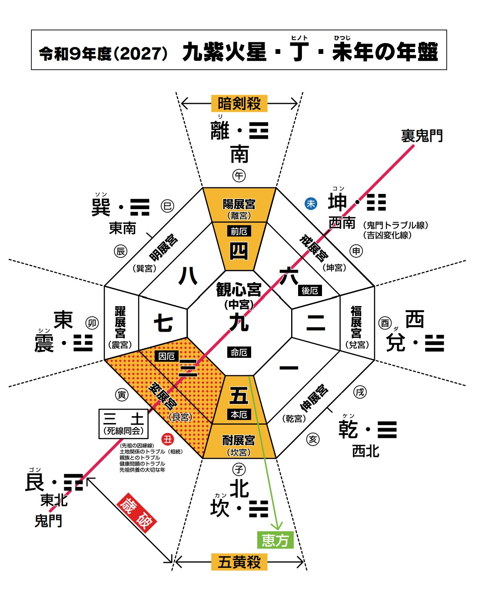

01
一年の運気を学ぶ
九紫火星・丁未の年回りを、九星気学に基づいて解説します。
長晶山 玉泉院がお届けする、令和九年度の年星運と気学セミナー。仕事や組織運営に携わる方はもちろん、日々の暮らしの中で一年の流れを知りたい個人の方もご参加いただけます。九星気学から一年の運気を学び、これからを見つめ直す機会としてご活用ください。
年星運・セミナーに申し込む →令和九年は「九紫火星・丁（ひのと）・未（ひつじ）」の年。年星運・小暦を通じて年の見立てを知り、気学セミナーではその読み解きを住職が解説します。仕事や組織運営の参考にしたい方も、ご自身やご家族の暮らしの中で一年を考えたい方も、気学が初めての方もご参加いただけます。
九紫火星・丁未の年回りを、九星気学に基づいて解説します。
長晶山玉泉院 第二十九世住職・井上慶亮が各回の講義を担当します。
一冊の書物としてお届けします。年の指針としてお役立てください。
混迷する時代だからこそ、足元を確かめ、これからを考える時間を大切に。年星運とセミナーが、皆さまにとって一年を考える手がかりとなれば幸いです。

長晶山玉泉院 第二十九世住職。第二十七代住職・井上日宏より九星気学の相伝を受ける。

令和八年（2026年）10月から12月まで、全8回開催します。ご都合のよい日程をお選びください。
10月11日（日）
10月20日（火）
10月29日（木）
11月7日（土）
11月16日（月）
11月27日（金）
12月4日（金）
12月12日（土）
〒135-0023 東京都江東区平野1-14-6 玉泉院内
地下鉄「清澄白河駅」より徒歩7分
駅からの道順：A3出口を出て左に進み、2つ目の信号のある交差点、天ぷら膳処「片山」の手前、一方通行の表示がある道を左折。突き当りを右折し、100m先の右側です。
Googleマップで開く →年星運・小暦のみのご購入、またはセミナー参加をお選びいただけます。セミナー参加費には年星運・小暦・研修資料が含まれます。
会場での購入は一冊6,000円。発送は十月中旬より随時。
年星運を申し込む →お申し込み後の確認事項やお支払い方法は、各フォームにてご確認ください。
お電話が不通の際は、FAXまたはE-mailにてお問い合わせください。
電話 03-3641-3702メールで問い合わせ